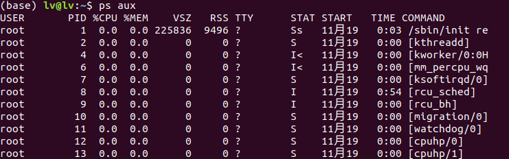
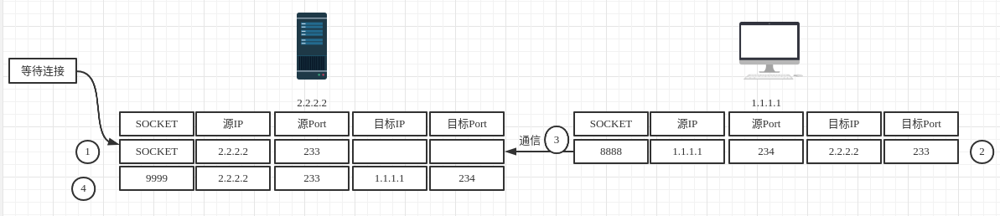

TCP_Socket
进程通信
这里的进程通信是基于网络的通信
进程

进程可以在终端中查看到进程的基本属性。其中在网络通信中最重要的是PID（进程ID，也就是端口号），这样可以在主机上唯一的表示进程。
在同台主机上，不同的进程可以通过共享内存、管道、信号量和消息队列等。但是在不同的主机下只有通过网络（socket）进行通信。这里我们假设网络通道已经建立好，现在我们只需要使用就可以了。
现在有一个问题：一台主机如何找到我要交流的主机呢？
这里就引出了IP这个概念。每一个主机都有一个唯一的IP地址，就像你的家都有一个唯一的地址一样。当你想要与目的主机交流时，就需要提前知道对方的IP地址及PID。
网络提供了什么样的服务。（这里的网络指的是传输层及以下的）
我们可以使用socket进行网络编码。socket又分为：TCP socket，UDP socket 和Raw socket。我们主要使用TCP和UDP套接字。
现在我们来整理一下：
一台主机有许多的进程，我们使用PID来区分这些进程。同时进程也使用PID来找到要进行通信的进程。而不同主机则是使用IP进行标识，主机通信与上述的PID的相似。
现在可以知道一个进程进行网络通信，需要知道对方的主机IP和进程的PID。这和我们信封通信很相似。注意：你在与对方通信时也要说明，你的IP和PID，这样对方才能给你返信阿。
而我们通信的方式（也就是运输的方式）主要有三种， 每种方式要准备的东西是不同的（汽车，火车、飞机）。
现在对网络的通信应该有大致的了解吧。
TCP套接字
还是以信封通信为例。
经常通信的两人并且他们的地址不会发生改变。你不会觉得每次填写地址等信息感到效率低嘛？
这就提出了套接字这个概念，大致就是使用一个整数来表示对方和自己的地址等信息，再之后的通信只需要提交一个整数就可以了。也就是你常去邮局给我寄信，邮局的人每次都知道。久而久之，你来邮局就不用再填写那些地址信息，邮局自动就帮你做了。
这个整数是一个具有本地意义的标示，对方是不可见的。你去到对方的邮局当然没这种效果了阿！
对于TCP套接字这个整数表示：(源IP，源port，目标IP，目标port)。不必在每个报文的发送都要指定这4元组。
服务端
创建TCP套接字
1 | |
初始化主机状态
1 | |
指定端口号
1 | |
监听，最大连接数量
1 | |
等待连接
1 | |
现在双方连接以及建立，就可以开始通信了。recv接收信息，send发送信息

9999则对应connectSocket
客户端
创建套接字
1 | |
初始化连接对象状态
1 | |
客户端在编程是不需要绑定端口，OS会自动绑定的。
连接
1 | |
开始信息交流
本博客所有文章除特别声明外，均采用 CC BY-SA 4.0 协议 ，转载请注明出处！